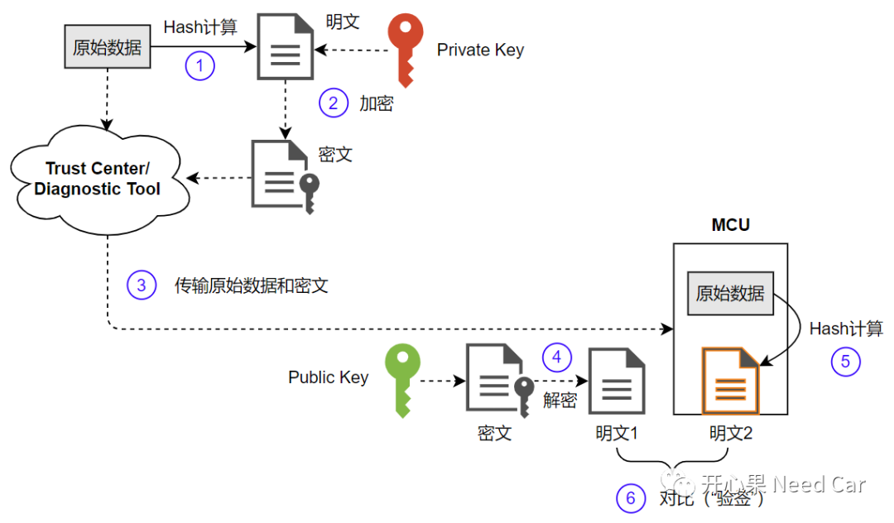
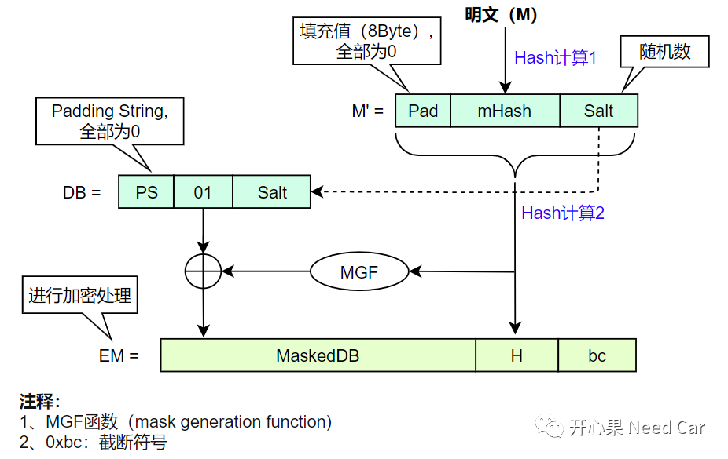
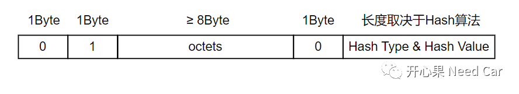
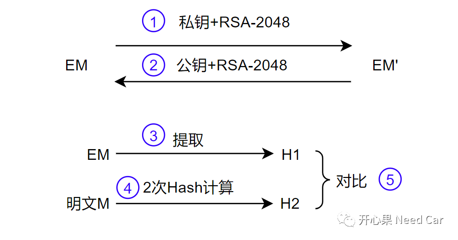
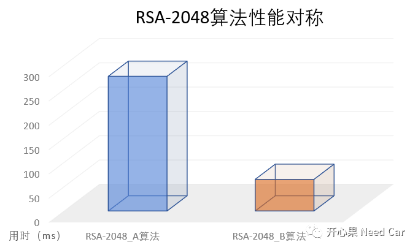

开心果 Need Car · 2023-11-14T07:13:00+08:00 · 微信原文
提到RSA，我们自然而然的会想到"非对称加密算法"，相比于对称加密算法（Symmetric-key algorithm），非对称加密算法不必担心公钥传输被截获的问题。对称加密算法使用相同密钥进行加密、解密操作，如果密钥被截获，第三方就可以随意伪造信息。而对于非对称加密算法，密钥成对出现，即：公钥、私钥唯一配对，私钥由信任中心或者密钥对生成方保存，私钥信息不外泄，而对应的公钥可以传输给多个目标，如果传输的数据被篡改，接收方则无法验证通过，确保了数据不会被伪造。
本文，和大家分享RSA-2048算法性能的Topic。
1、RSA-2048与公钥、私钥关系
使用RSA-2048算法，离不开公钥和私钥，在实际的项目中，尤其Bootloader更新Application程序中，收到的信息是信任中心或者上位机加签过的摘要信息，需使用提前存储在Bootloader中的公钥，对摘要信息解密，也就是"验签"。不太理解这个过程的小伙伴，可以参考前文《信息安全：软件认证，知识点梳理》。
数据加签和验签的流程示意如下：

2、RSA-PSS机制
为了防止生成相同的密文，人们想出了RSA-PSS（ Probabilistic Signature Scheme）填充机制，RSA-PSS机制相对于RSA-PKCS#1 v1.5（PKCS：Public Key Cryptography Standards），签名机制更安全。
（一）RSA-PSS填充机制

如上图，RSA-PSS填充和计算具体过程如下：
将明文（M）进行Hash计算，得到mHash，同时添加填充值和随机值（Salt）得到M’；
对M'进行二次Hash计算，得到哈希值H，DB配合MGF函数得到MaskedDB，加上截断符号0xbc得到EM；
之后对EM进行RSA加密计算，得到密文EM'用于传输，这样，即可避免密文的重复性。
（二）RSA-PKCS#v1.5填充模式


3、基于RSA-2048-PSS的性能测试

参考资料：
往期精彩回顾